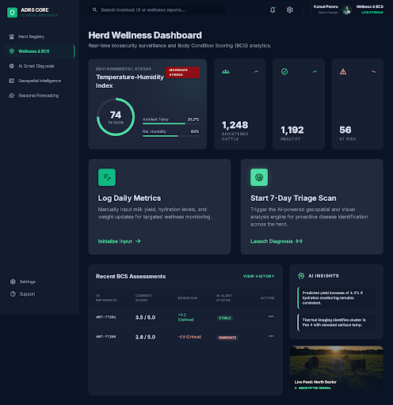

Available · DOCX
Common Integrated Solution Report
The four components, shared architecture, evaluation results and future directions in one group thesis.
Download group thesisSLIIT · FINAL YEAR RESEARCH · 2026
Animal Disease Reporting System
Connecting cattle wellness, image assessment and outbreak surveillance in one veterinary-supervised framework for Sri Lanka.
Research architecture · supervised decision support
01 / THE RESEARCH
Farm observations, clinical evidence and surveillance records often sit apart. ADRS brings them into a common review workflow.
Farmers record animal health information. AI models help assess wellness and photographs. Veterinary officers review the evidence, while spatial and district-level analyses provide context for surveillance planning.
A research prototype with component-level evaluation.
Record daily observations and raise health concerns.
Review evidence and verify clinical cases.
Explore spatial context and district-level risk.
02 / FOUR COMPONENTS
From individual cattle to district-wide patterns, each component answers a distinct research question.
Professional judgement stays at the centre. AI outputs are candidate evidence. Only an authorised veterinary review can establish a confirmed clinical record.
A LOOK AT THE APPLICATION
Role-oriented views bring observations, assessment results and review tasks together.
These supplied interface concepts illustrate the intended experience. Screen values are illustrative.

03 / OUR RESEARCH JOURNEY
The work brought four individual research streams into one project. The October 2026 group thesis consolidates the evidence.
DEFINE
Identify gaps between farm monitoring, veterinary review and disease surveillance.
DEVELOP
Prepare data and develop image, wellness, spatial and district-risk methods.
CONNECT & EVALUATE
Define shared interfaces, assess components and document selected integration workflows.
DOCUMENT
Record the results, integration boundaries and next steps in the common thesis.
Prospective clinical evaluation, complete image-service integration, broader security and recovery testing, and structured field studies with farmers and veterinary officers.
04 / RESEARCH ARCHIVE
Read the completed group thesis and explore the project's reports and presentations.
The four components, shared architecture, evaluation results and future directions in one group thesis.
Download group thesisThe group thesis is available above. The remaining entries show which approved files are still awaiting upload.
No deliverables match your search.
05 / THE PEOPLE BEHIND ADRS
Group R26-SE-013
Faculty of Computing, SLIIT
BSc (Hons) in Information Technology
Specialising in Software Engineering
Mrs. Dilani LunugalageSupervisor
Mr. Eishan WeerasingheCo-supervisor